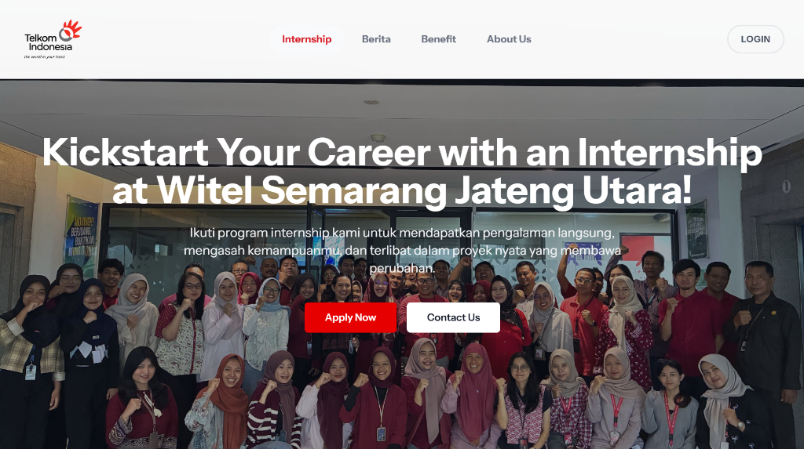
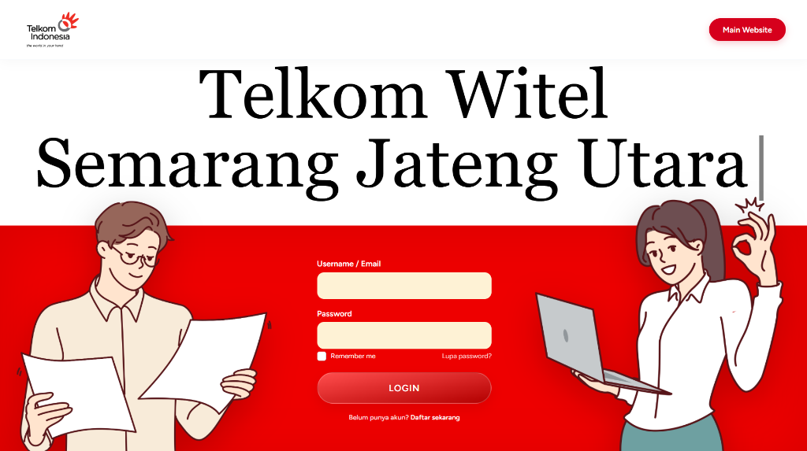
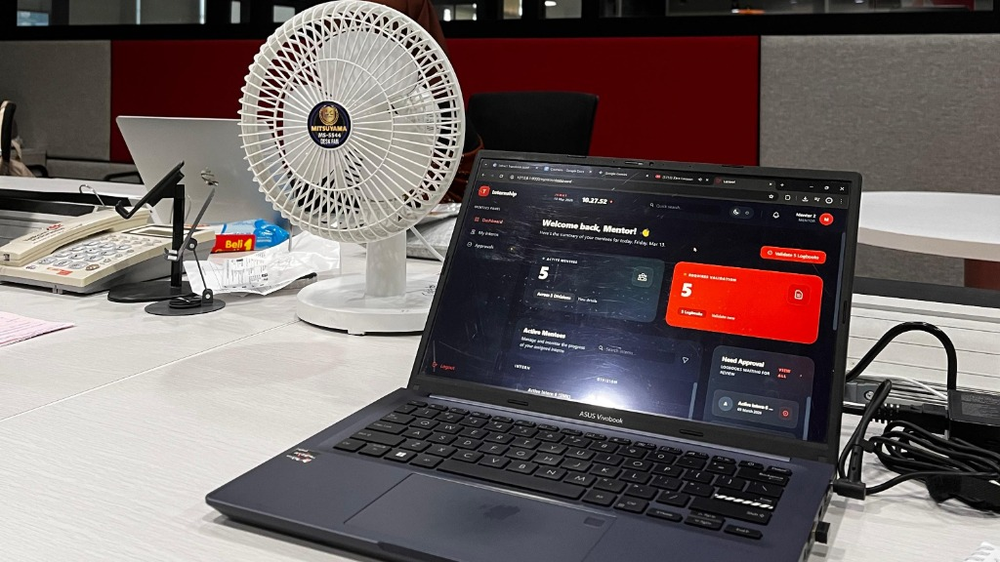
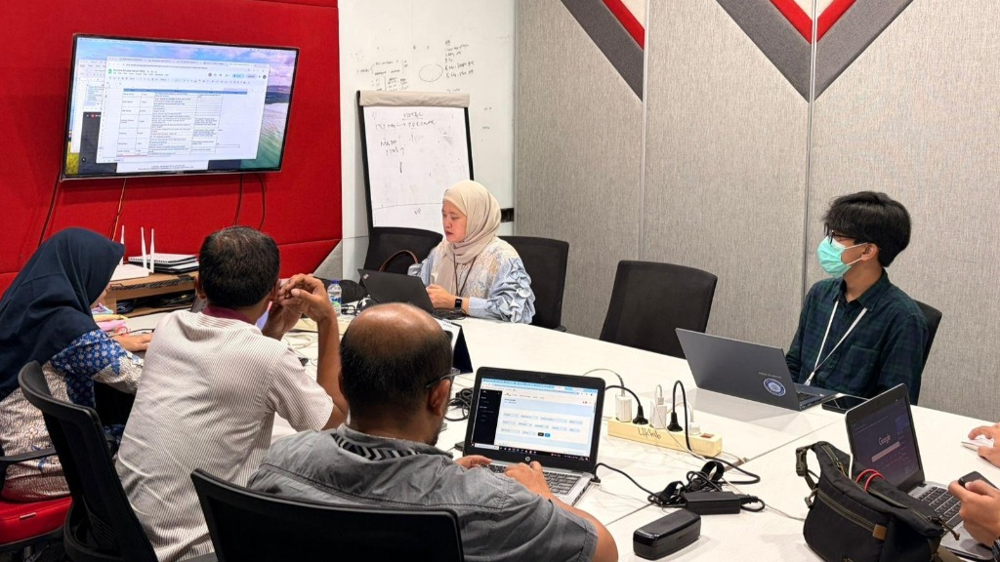
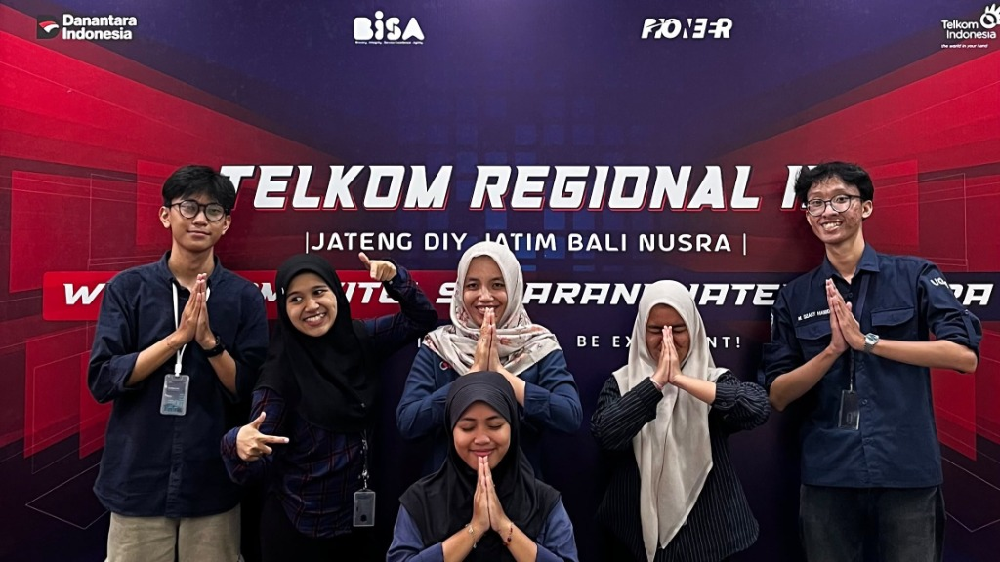

PT Telkom Indonesia
Magang Shared Service & General SupportShared Service & General Support Intern
Mengidentifikasi kebutuhan alur kerja divisi, merancang diagram proses bisnis (UML & BPMN), membangun sistem dashboard manajemen magang berbasis web, serta menyusun dokumentasi operasional untuk persiapan audit SMK3. Identified division workflow requirements, mapped business process diagrams (UML & BPMN), engineered a web-based internship management dashboard, and structured operational documentation for SMK3 audit compliance.
Platform internal untuk otomatisasi pencatatan absensi, penugasan proyek mentor, dan monitoring performa magang berkala.Internal web platform for automated attendance tracking, mentor task assignments, and routine intern performance evaluation.




